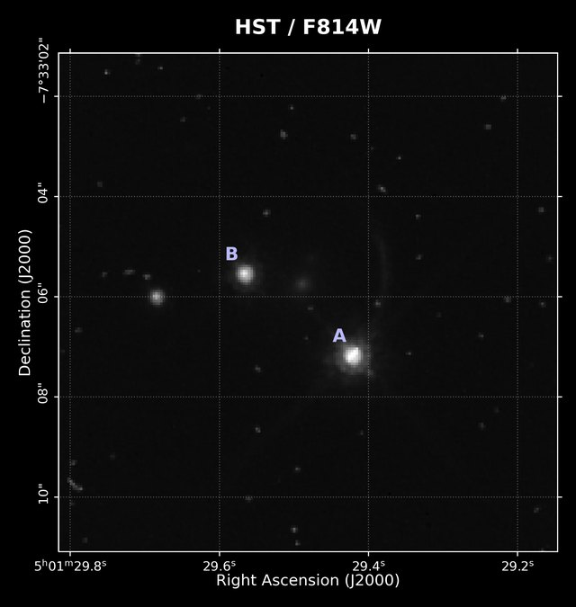
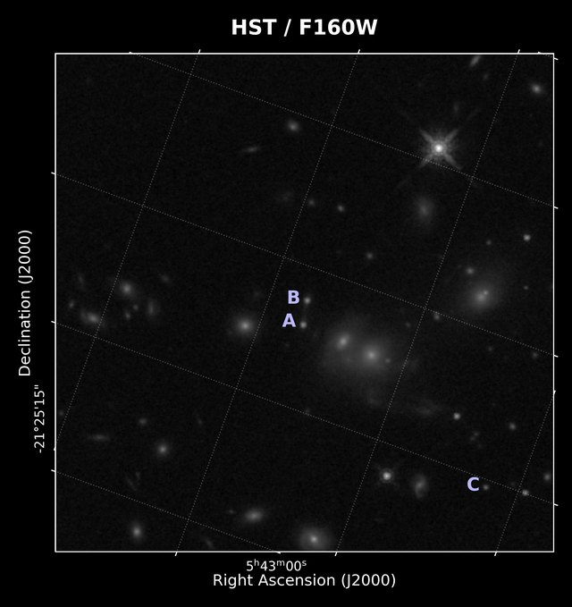
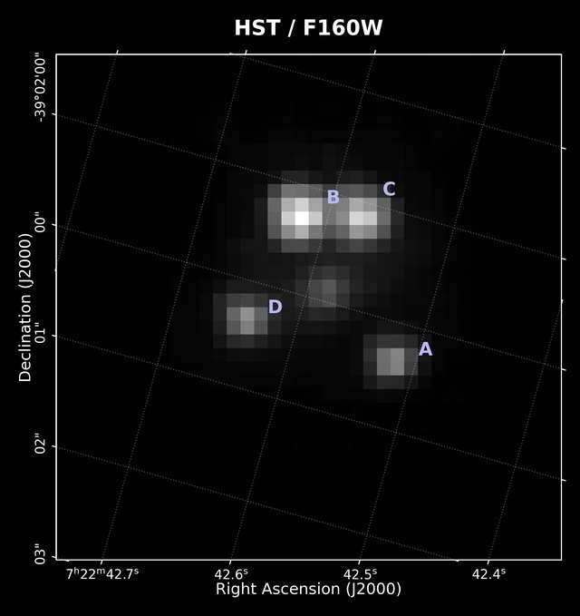
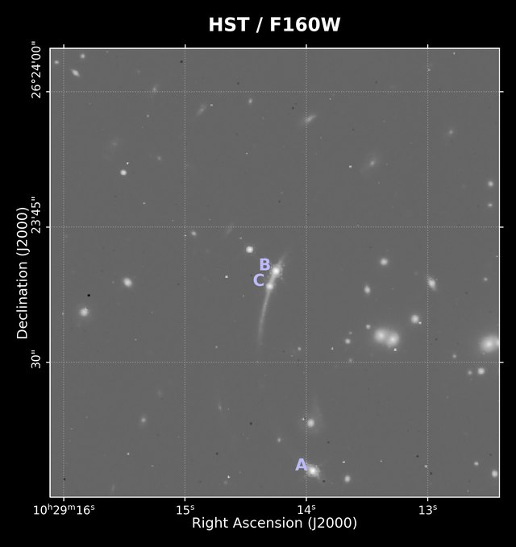
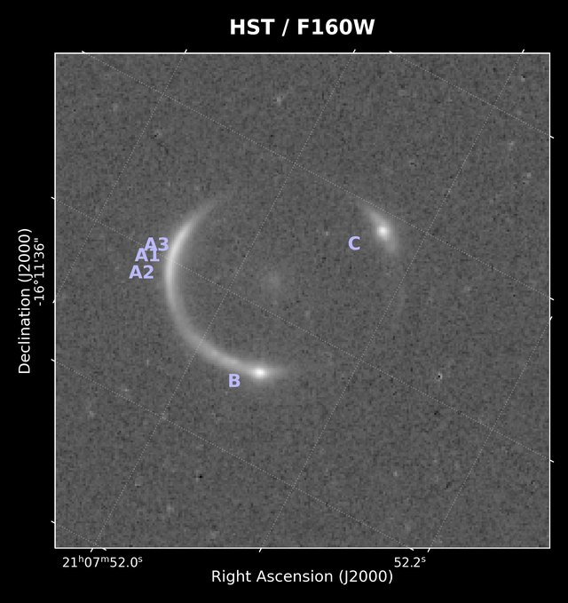
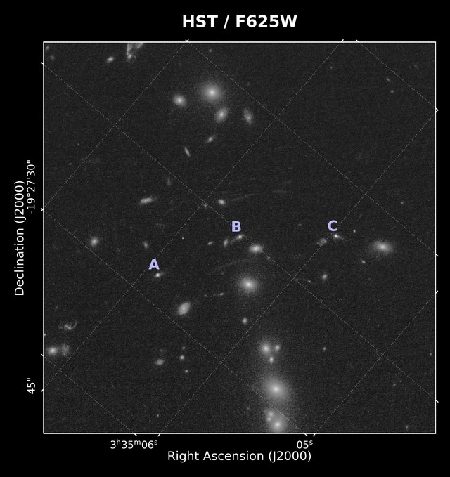
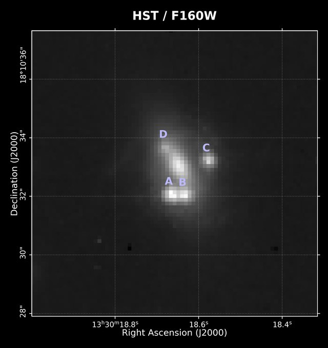
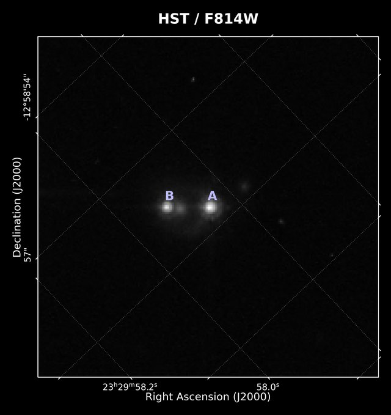
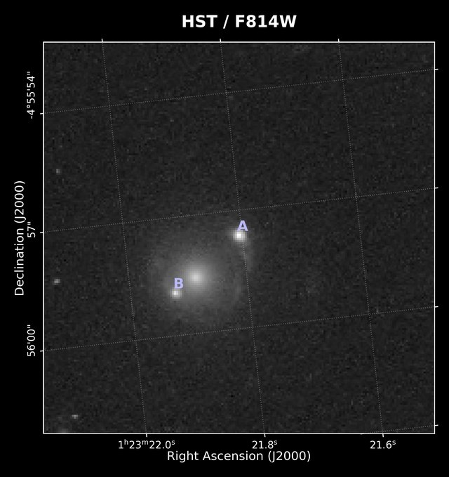

J0501-0733
P3 MonitoringTwo lensed images (A, B)
PairStatusPrecision
- A–BUnder evaluation—
Two candidate solutions are still being compared.

Two lensed images (A, B)
Two candidate solutions are still being compared.

Three lensed images (A, B, C)

Four lensed images (A, B, C, D)
B and C are measured together as a single light curve (BC).

Three lensed images (A, B, C)

Lensed images A1–A3, B and C
No variability

Three lensed images (A, B, C)
In progress

Four lensed images (A, B, C, D)
A and B are measured together as a single light curve (AB).

Two lensed images (A, B)
Preliminary values: monitoring ongoing, not final.

Two lensed images (A, B)
In progress Monitoring ongoing.
Click an image to enlarge it.